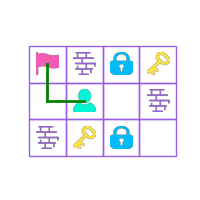
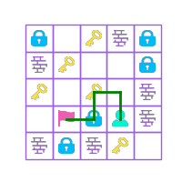
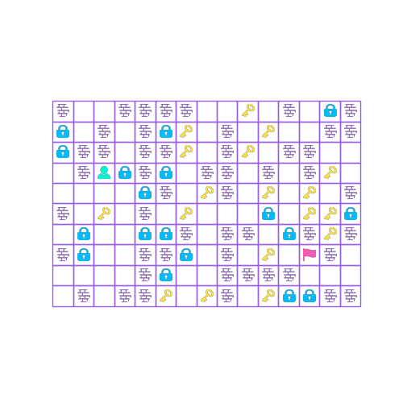

Homework 1: Keys, Doors, and Shortest Paths
State-space search in a changing grid world
hw1.py
Includes hw1.py, built-in-only helpers, and a local checker with the public examples.
Upload one file named hw1.py to Canvas. Do not import modules. Your file must define the class and method shown below, and it must not print, read input, open files, or run a user interface when imported by the grader.
class Solution:
def shortest_path(
self, grid: list[list[int]]
) -> list[tuple[int, int]] | None:
# Return a shortest legal path, or None if no path exists.
...The grader may pass the argument positionally, so changing the old parameter name from map to grid does not affect compatibility and avoids shadowing Python’s built-in map function.
Background: from a puzzle game to a search problem
About the game. Tower of the Sorcerer is a retro-style puzzle role-playing game released in 1996 as freeware for Windows, set in a vertical, multi-level tower controlled by an evil sorcerer. The player guides a hero upward by choosing routes carefully, battling monsters, collecting keys, and managing limited resources such as health and attack points.
For additional historical context and discussion of the genre it inspired, read this Tower of the Sorcerer retrospective on Reddit.
For this homework, the game is simplified to one floor with no monsters or combat so that the central state-space question is visible: which route reaches the exit while using the available keys correctly?
In ordinary grid pathfinding, a coordinate is often enough to describe a state. Here, moving changes the future. A collected key disappears, an opened door stays open, and the key inventory changes. Consequently, two paths that arrive at the same coordinate may leave the player with different legal continuations.
Every move has the same cost, so breadth-first search is a natural shortest-path tool once a complete state representation and a way to reconstruct parent links have been chosen. The modeling work—not the queue syntax—is the main challenge.
The puzzle
The map is a rectangular 2D list with at most 20 rows and 20 columns. It contains exactly one player and exactly one exit, at most 16 keys, and at most 16 doors.
Always passable
Costs one key the first time
Never passable
Collected once
Destination
Starting position
Movement and state changes
From (row, column), the player may move one cell up, down, left, or right. Diagonal moves are not allowed.
- Entering a road, an already-collected key cell, or an already-opened door is free.
- Entering an uncollected key cell adds one key to the inventory. That key cannot be collected again.
- Entering a closed door requires at least one key and consumes exactly one key. That door remains open afterward.
- A wall and any closed door that cannot be paid for are impassable.
- Reaching the exit ends the path.
You may copy the grid internally, but your method should not rely on changes persisting after it returns.
Required output
Return a list of (row, column) tuples that includes both the starting cell and the exit cell. Consecutive entries must be orthogonally adjacent. Among all legal paths, return one with the minimum number of moves; any shortest path is accepted. Return None when the exit is unreachable.
Two visits to the same coordinate are not necessarily equivalent. Ask what information must be included with the coordinate so that the set of legal future moves is determined completely.
Helper code
The following built-in-only helpers may be copied into hw1.py. They handle constants, bounds, neighbor generation, and tile lookup, but intentionally leave the state representation and search algorithm to you.
ROAD = 0
DOOR = 1
WALL = 2
KEY = 3
EXIT = 4
PLAYER = 5
DIRECTIONS = ((-1, 0), (1, 0), (0, -1), (0, 1))
def find_tile(grid: list[list[int]], tile: int) -> tuple[int, int]:
for row, values in enumerate(grid):
for col, value in enumerate(values):
if value == tile:
return row, col
raise ValueError(f"tile {tile} is missing")
def neighbors(
row: int, col: int, height: int, width: int
):
for d_row, d_col in DIRECTIONS:
next_row = row + d_row
next_col = col + d_col
if 0 <= next_row < height and 0 <= next_col < width:
yield next_row, next_colKeep this checker in a separate file such as check_hw1.py; do not paste it into the submitted hw1.py. It checks the path format and simulates keys and doors without changing the original grid. It does not prove that a legal path is shortest.
from hw1 import Solution
ROAD, DOOR, WALL, KEY, EXIT, PLAYER = range(6)
def path_is_legal(grid, path):
if not path:
return False
board = [row[:] for row in grid]
height = len(board)
width = len(board[0])
start = next(
(r, c)
for r, row in enumerate(board)
for c, tile in enumerate(row)
if tile == PLAYER
)
goal = next(
(r, c)
for r, row in enumerate(board)
for c, tile in enumerate(row)
if tile == EXIT
)
if path[0] != start:
return False
keys = 0
previous = start
for step in path[1:]:
if not (
isinstance(step, tuple)
and len(step) == 2
and all(isinstance(value, int) for value in step)
):
return False
row, col = step
if not (0 <= row < height and 0 <= col < width):
return False
if abs(row - previous[0]) + abs(col - previous[1]) != 1:
return False
tile = board[row][col]
if tile == WALL:
return False
if tile == KEY:
keys += 1
board[row][col] = ROAD
elif tile == DOOR:
if keys == 0:
return False
keys -= 1
board[row][col] = ROAD
previous = step
return path[-1] == goal
example = [
[4, 2, 1, 3],
[0, 5, 0, 2],
[2, 3, 1, 0],
]
result = Solution().shortest_path([row[:] for row in example])
assert path_is_legal(example, result)
assert len(result) == 3Examples
Example 1
grid = [
[4, 2, 1, 3],
[0, 5, 0, 2],
[2, 3, 1, 0],
]One shortest path is:
[(1, 1), (1, 0), (0, 0)]
Example 2
grid = [
[1, 0, 3, 2, 1],
[2, 3, 0, 0, 1],
[3, 0, 3, 0, 2],
[0, 4, 1, 5, 2],
[2, 1, 2, 3, 0],
]One shortest path is:
[(3, 3), (2, 3), (2, 2), (3, 2), (3, 1)]
Example 3
grid = [
[5, 1, 4],
[2, 2, 2],
[3, 0, 0],
]The key is unreachable, so the result is None.

What will be checked
- The returned value follows the exact interface and path format.
- Every move is legal under the key and door rules.
- The route is shortest, not merely a route that reaches the exit.
- No-solution maps return
None. - The implementation handles revisiting cells under different inventory and door states.
- Runtime and memory use are reasonable for the stated limits.
- The code is readable and avoids hard-coded answers.